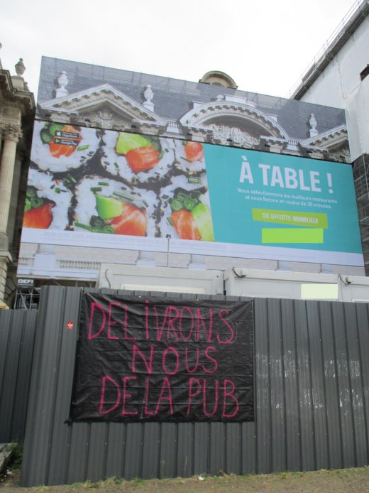
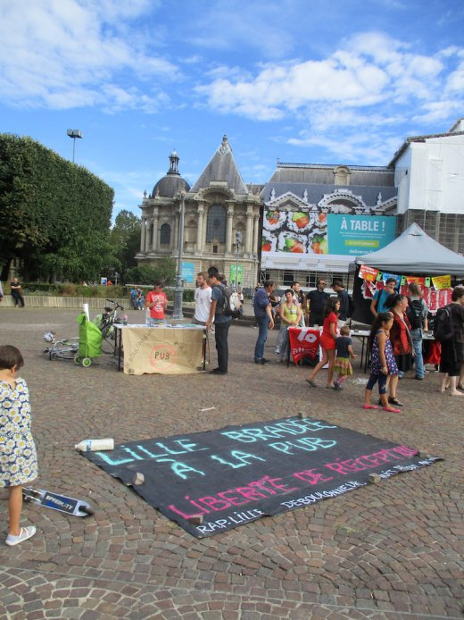
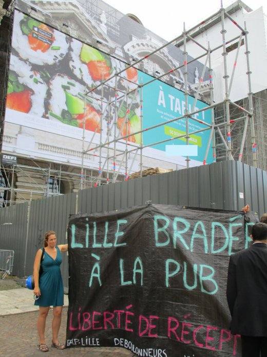

| |
Site dédié à la publication d'informations communiquées par le Collectif des déboulonneurs. En aucun cas ce site n'appelle à des actions illégales. | |
 |
||
|
Accueil du site > Lille > [Lille] 90e : Braderie Debout
Date : Samedi 3 Septembre 2016 à 15h Lieu de rendez-vous : Place de la République Description de l’action : Bâchage d’une palissade de chantier, devant la bâche publicitaire géante du Palais des Beaux-Arts de Lille. Cette action était co-organisée avec RAP-Lille (qui a lancé une pétition contre cette bâche) et la commission antipub Nuit-Debout. Nombre de participants à l’action : une cinquantaine de soutiens, 160 signatures de la pétition dans les 2 premières heures. Les visiteurs du Palais du Beaux-Arts sont unanimes : "c’est une horreur cette pub !" Panneaux touchés : La bâche publicitaire étant inaccessible, ce sont les palissades de chantier qui ont servi de support. 
Slogans : Délivrons-nous de la pub / Lille bradée à la pub / Liberté de réception Police : Le service de sécurité du Palais des Beaux-Arts nous a empêché d’accrocher la seconde bâche. Puis la première a été décrochée par les forces de l’ordre. Les bâches récupérées ont été exposées devant le stand des antipubs. 
Presse : Article de la Voix du Nord sur l’installation du panneau : Le Palais des Beaux-Arts déguste Article de la Voix du Nord sur l’action Les anti-pubs ne tombent pas dans le panneau 
Compte-rendu détaillé : C’est une action commune entre les déboulonneurs de Lille, l’association R.A.P. et Nuit Debout, action originale organisée suite à l’installation d’une grande bâche publicitaire sur le fronton du palais des Beaux Arts à Lille. L’action était prévue place de la République avec un rendez-vous sur cette place à 15 heures. Les "manifestants" sont venus progressivement se regrouper près du jet d’eau sous un beau soleil chaud. Une vingtaine de véhicules de police étaient stationnés côté préfecture pour des raisons de sécurité. Deux bâches noires de 8 m² ont servi de support aux inscriptions anti-publicitaires effectuées à la bombe de peinture. L’objectif était d’accrocher ces bâches sur les palissades entourant le chantier de rénovation des façades du musée. Vers 15 h 30 nous étions déjà une cinquantaine de participants. Pendant que l’association Nuit Debout dressait des tonnelles sur la place, les déboulonneurs se sont approchés des palissades pour y accrocher une bâche. D’autres volontaires ont demandé aux passants de signer des pétitions pour s’opposer contre l’usage de la publicité à des fins économiques. Devant la file d’attente des passants qui venaient visiter le musée, les déboulonneurs ont voulu accrocher un autre bâche à la palissade. Mais ils en ont été empêchés par les agents de sécurité du musée. Ils ont alors tendu à la main la bâche devant les visiteurs jusqu’à ce que, appelés par les agents de sécurité du musée, les policiers arrivent. Cette bâche a du être repliée, l’autre a été décrochée de son support par les policiers eux-mêmes. |
|
Site utilisant SPIP - Hébergement Ouvaton
|